Overview
TL;DR
ViTAMINS integrates synthetic hard negatives into contrastive self-supervised pretraining of vision transformers. Instead of relying only on whatever negatives sit in the memory queue, ViTAMINS synthesizes harder negatives "on-the-fly" in representation space, using geometric, stochastic, and adversarial perturbations of the hardest existing ones, at negligible extra cost, with no multi-crop augmentation or pixel-level reconstruction.
Abstract
We introduce ViTAMINS, a method that integrates synthetic hard negatives into unsupervised vision transformer pretraining to improve representation quality. Our approach is thoroughly benchmarked on ImageNet and transfer learning, image retrieval, copy detection, and image, video segmentation tasks. Notably, our proposed negatives give rise to emergent properties, where learned representations contain explicit information about the semantic content of an image and serve as excellent classifiers (up to +11.3% over baselines). ViTAMINS achieves these benefits through simple modifications to existing contrastive frameworks and outperforms competing methods while being more resource efficient, e.g., our ViT-B surpasses V-JEPA with ViT-L. Our findings motivate reconsidering contrastive learning as a simpler yet powerful alternative to dominant generative and self-distillation approaches.
Motivation
Three ways to avoid collapse, and a fourth lever
Joint-embedding methods for vision transformers fall into three families, each using a different trick to avoid representational collapse: contrastive learning embeds augmented views into a joint space, pulling same-instance pairs together while pushing different instances apart; self-distillation trains a student to match a teacher's embeddings without negatives at all; and clustering-based methods use a clustering objective instead. ViTAMINS stays inside the first family, but pulls on a lever the others don't have: the quality of the negatives themselves.
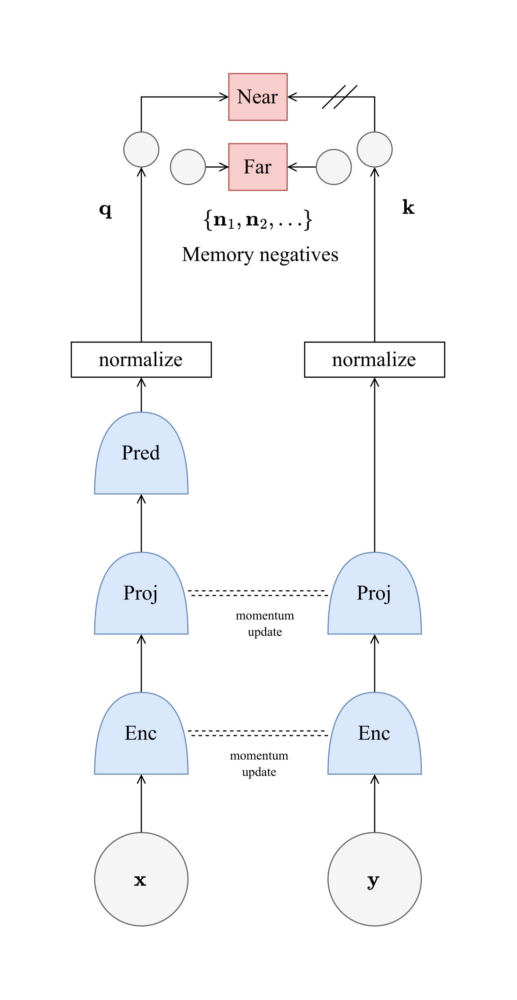
Contrastive
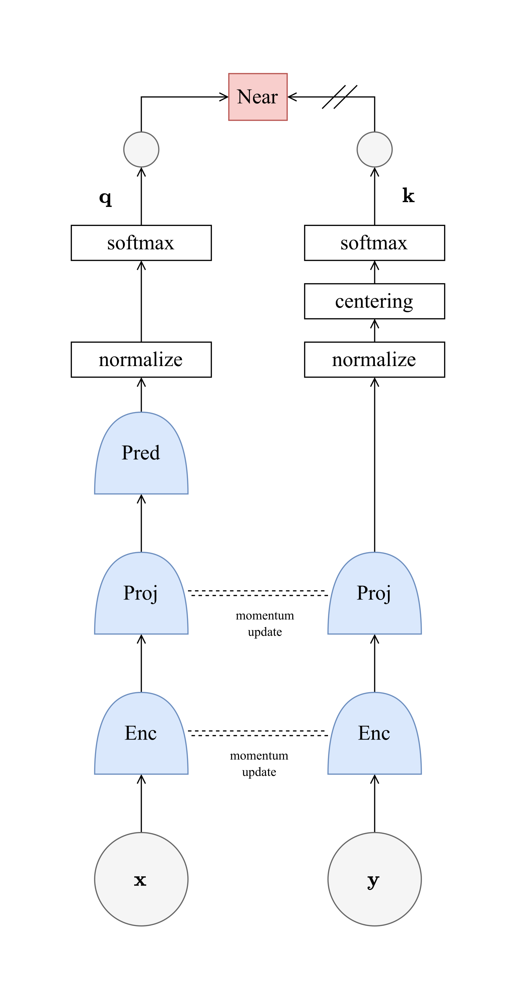
Self-distillation
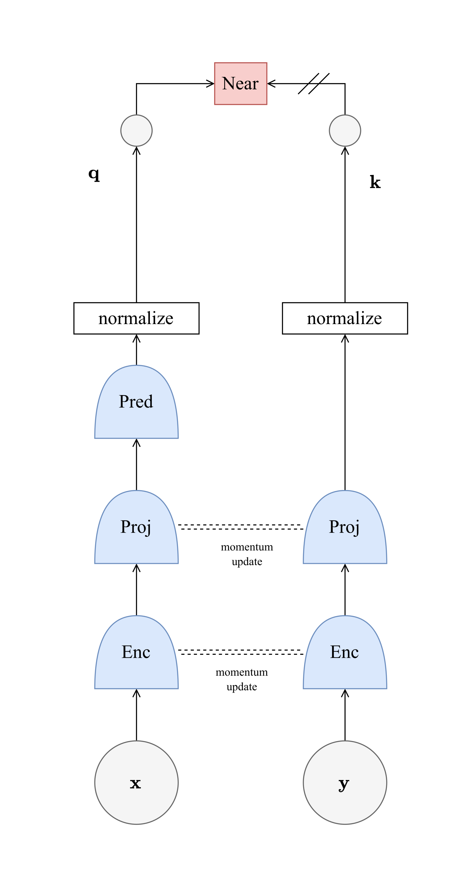
Self-distillation
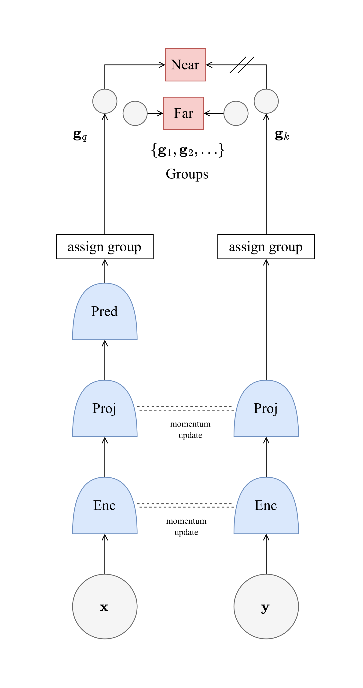
Clustering
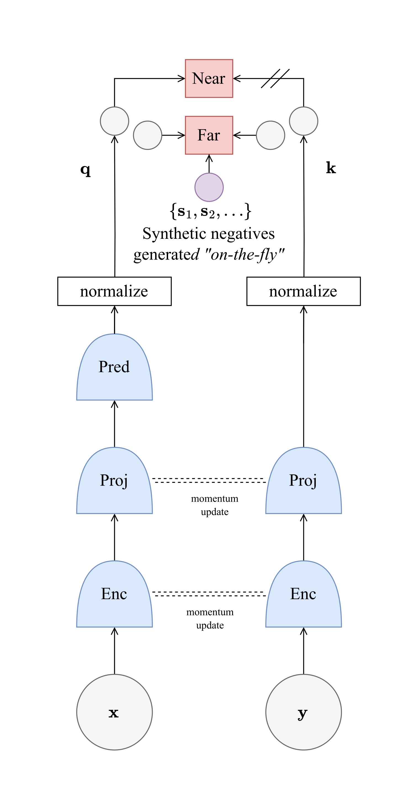
Ours
Self-supervised learning categories for vision transformers, and where ViTAMINS fits. Contrastive (MoBY) maximizes similarity between same-instance embeddings while minimizing similarity across others; self-distillation (DINO, BYOL) trains a student to match a teacher without explicit negatives; clustering (SMoG) assigns pseudo-labels online. ViTAMINS stays inside the contrastive family, but synthesizes harder negatives "on-the-fly", directly sharpening the discrimination task the encoder has to solve.
What's already there
Standard contrastive frameworks draw negatives from whatever happens to sit in the memory queue, hard or easy.
Create harder ones
ViTAMINS identifies the hardest existing negatives, then synthesizes even harder ones "on-the-fly" via six perturbation strategies.
No extra views needed
No multi-crop augmentation, no pixel reconstruction, no second forward pass through the backbone, just representation-space arithmetic.
Why a harder task helps
We deliberately replace purely random queue negatives with synthetic hard negatives drawn from the hardest samples already in the queue. We don't change the architecture: we operate directly in representation space and synthesize negatives close to the decision boundary. That alone makes the discrimination task the encoder has to solve substantially harder, and our central empirical finding is that this harder task is exactly what pushes the model toward more discriminative, semantically structured representations, the emergent properties we measure in Results below.
Method
Synthesizing hard negatives "on-the-fly"
Given an image \(\mathbf{x}\), two augmented views \(\mathbf{x}_q = t_q(\mathbf{x})\) and \(\mathbf{x}_k = t_k(\mathbf{x})\) are encoded by an online branch \(f_\theta, g_\theta, h_\theta\) and a momentum target branch \(f_\xi, g_\xi\), producing \(\ell_2\)-normalized embeddings \(\mathbf{q}\) and \(\mathbf{k}\). A memory queue holds \(K{=}4096\) negative embeddings \(\mathbf{n} \in \mathcal{Q}\) from past steps.
The online branch alone carries a predictor \(h_\theta\) on top of its encoder \(f_\theta\) and projector \(g_\theta\); the momentum branch stops at the projector. Only \(\theta\) receives gradients, with \(\xi \leftarrow m\xi + (1-m)\theta\) updated by exponential moving average, so \(\mathbf{k}\) evolves slowly and stably across steps.
Six ways to synthesize a harder negative
Negatives are ranked by their similarity to the query, \(\ell(\mathbf{n}_i) = \mathbf{q}^\top \mathbf{n}_i\), and the top-\(N\) hardest, \(\hat{\mathcal{Q}}^N\), are selected. Six transformation strategies then generate synthetic negatives \(\mathbf{s}_k^i\) from this hard set:
Interpolated and extrapolated negatives move along the query–negative axis; mixup blends two hard negatives; noise, gradient, and sign-based perturbations probe the local geometry around a hard negative. All synthetic negatives are re-normalized to stay on the embedding sphere.
Training objective
The synthetic set \(\mathcal{S} = \bigcup_{i=1}^{6} S^i\) augments the queue negatives inside a standard InfoNCE denominator:
With no synthetic negatives (\(\mathcal{S}=\emptyset\)), this reduces exactly to the InfoNCE loss used by MoBY and MoCo-v3 for vision transformers. Replacing InfoNCE with a mean-squared error between \(\mathbf{q}\) and \(\mathbf{k}\) instead reduces the framework to BYOL-/DINO-style self-distillation.
Gradient: attraction competes with softmax-weighted repulsion
Why does the hardness of a negative matter at all? Differentiating the loss with respect to the query makes it explicit. Writing \(p(\mathbf{x}) = \exp(\mathbf{q}^\top\mathbf{x}/\tau) / Z\) for the softmax weight assigned to any key or negative \(\mathbf{x}\) under the full denominator \(Z\), the gradient collapses to a single weighted sum:
Gradient descent moves \(\mathbf{q}\) in the direction \(-\nabla_{\mathbf{q}}\mathcal{L}\): a pull toward \(\mathbf{k}\) (positive attraction) net of a pull toward every negative \(\mathbf{n}\), each weighted by its own softmax probability \(p(\mathbf{n})\) (negative repulsion). Because \(p(\mathbf{n})\) grows with \(\mathbf{q}^\top\mathbf{n}\), negatives close to the query dominate the sum, regardless of how many easy negatives sit in the queue.
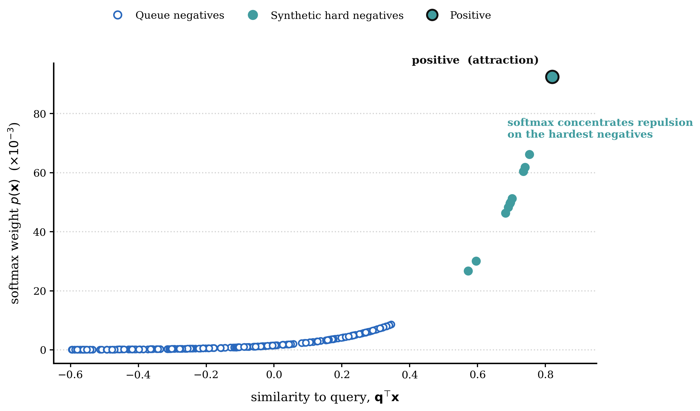
Softmax weight \(p(\mathbf{x})\) against similarity to the query, for 230 representative queue negatives and 10 synthetic hard negatives at \(\tau=0.2\). Ordinary queue negatives sit far from the query and contribute almost nothing to the gradient; synthetic hard negatives, placed deliberately close to the decision boundary, receive orders of magnitude more softmax weight and therefore dominate the repulsive term. This is the mechanism behind the "harder task" framing above: synthetic negatives don't just add more terms to the sum, they concentrate the gradient where it is most informative.
Results
Stronger features, fewer parameters
ViTAMINS learns stronger representations than contrastive, self-distillation, generative, and JEPA baselines under matched architectures. The design stays deliberately simple: no multi-crop augmentation (unlike SwAV, DINO, or DINOv2), and none of the extra self-distillation machinery — centering, sharpening, teacher temperature schedules — that DINO and DINOv2 rely on. Just a single InfoNCE loss, a momentum target, and better negatives.
Our ViT-B reaches 77.1% top-1 in 300 epochs, surpassing V-JEPA with ViT-L and matching LeJEPA with ViT-H at 7.3× fewer parameters. Across backbones, ViTAMINS reaches 73.1% / 77.1% linear top-1 with ViT-S/16 and ViT-B/16, and 75.4% / 78.0% with Swin-T and Swin-S.
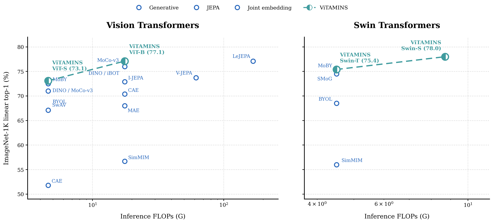
ViTAMINS reaches the strongest linear accuracy at matched inference cost on both ViT and Swin backbones, matching LeJEPA (ViT-H) and surpassing V-JEPA (ViT-L) at a fraction of the FLOPs.
A plain ViT-B/16 reaches 77.1% linear top-1 in 300 epochs with no multi-crop and no self-distillation machinery, matching or beating methods built on far more complex training recipes.
Nearest-neighbour classification
Because synthetic hard negatives sharpen the discrimination task during pretraining, the resulting features are not just linearly separable, they organize themselves well enough to serve as strong nearest-neighbour classifiers with no training at all.
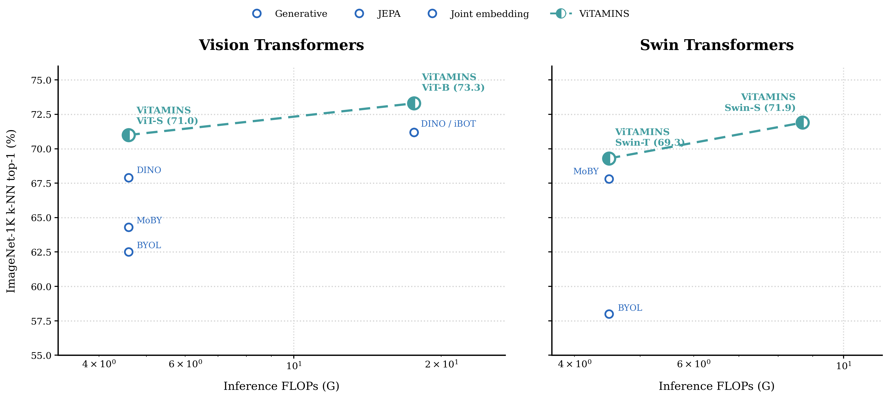
k-NN top-1 accuracy, 300 epochs, no multi-crop. Synthetic hard negatives lift k-NN accuracy from 62.5 to 71.0 on ViT-S (+8.5 over BYOL) and from 58.0 to 69.3 on Swin-T (+11.3 over BYOL), the single largest margin of any comparison in the paper, despite linear top-1 moving by only a couple of points.
The same features are also strong nearest-neighbour classifiers out of the box: ViTAMINS reaches 73.3% k-NN top-1 on ImageNet-1K with a compact ViT-B/16, no classifier head, no extra training.
Attention structure and video segmentation
We visualize ViT-S/16 self-attention for six examples: the input image, the [CLS]-token attention, and the patch attention produced by ViTAMINS. Without any labels, attention concentrates on the primary object with clear, semantically coherent boundaries. Select an example:
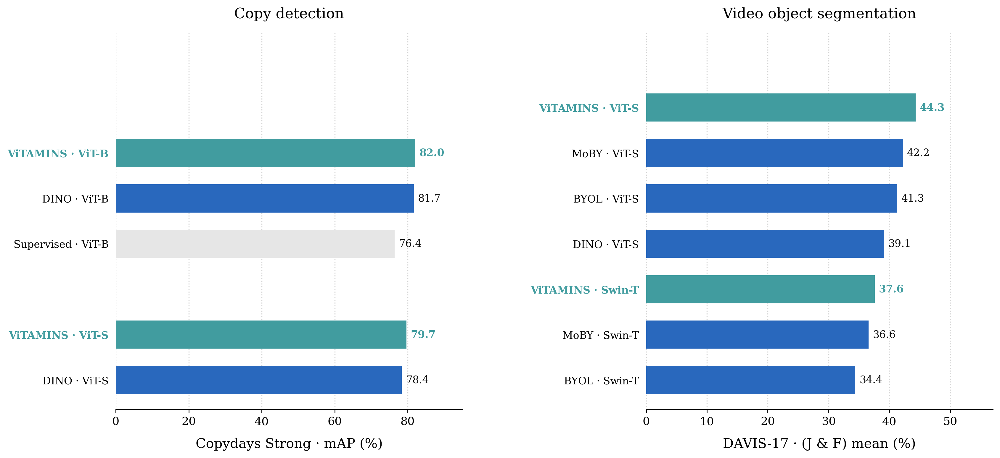
Copy detection (Copydays Strong mAP) and zero-shot video object segmentation (DAVIS-17), both with frozen features and no video training at all.
Self-supervised ViTAMINS features carry explicit information about an image's semantic structure directly in their attention maps, boundaries that do not emerge nearly as cleanly from supervised ViTs or from convolutional networks trained the same way, and that transfer zero-shot to video object segmentation despite no video training at all.
Image retrieval
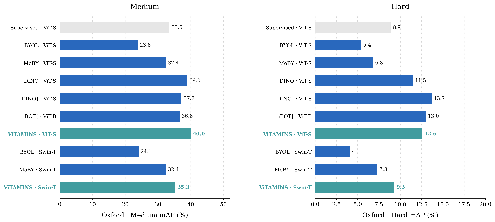
Revisited Oxford, Medium and Hard protocols, zero-shot with frozen ViTAMINS features.
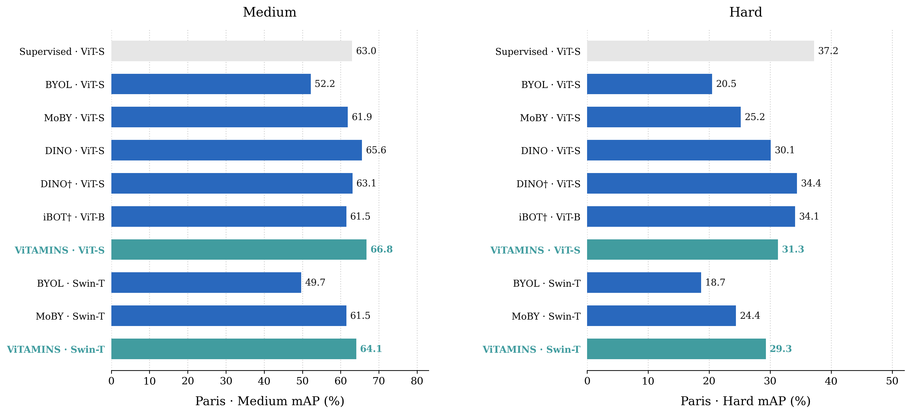
Revisited Paris, Medium and Hard protocols, zero-shot with frozen ViTAMINS features.
Dense prediction
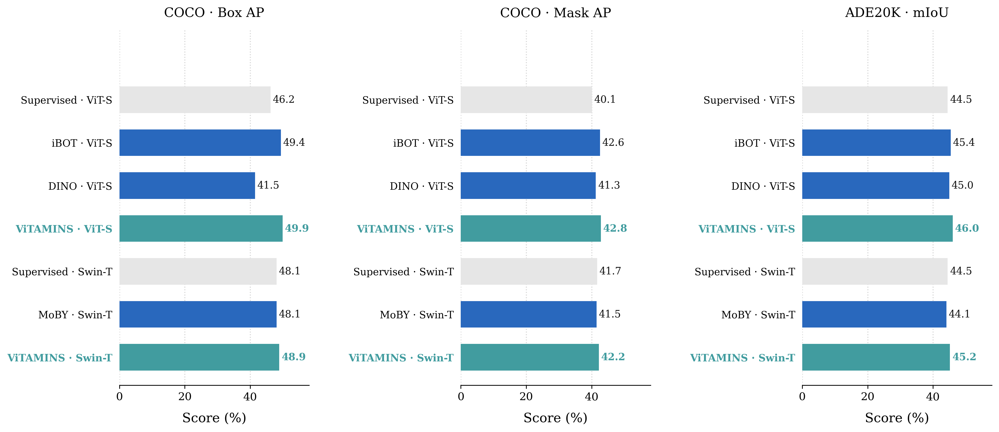
Gains carry over to dense prediction: ViTAMINS gives the best object detection and instance segmentation on COCO, and the best semantic segmentation on ADE20K, among all compared models, fine-tuned from frozen pretraining.
Conclusion
High-quality negatives are still a powerful lever
Synthetic hard negatives significantly improve vision transformer representations in self-supervised contrastive learning. Emergent semantic segmentation properties, previously considered exclusive to self-distillation methods like DINO, naturally arise in contrastive learning and are further strengthened through synthetic negative generation. ViTAMINS achieves five improvements over standard contrastive baselines: (i) improved ImageNet linear accuracy, (ii) strong k-NN performance indicating high-quality features, (iii) improved downstream performance across diverse settings, (iv) sharper attention maps with better object boundary alignment, and (v) strong video object segmentation despite no video training. These gains are achieved without DINO's complex procedures (centering, sharpening, multi-crop, extended schedules); under identical regimes (300 epochs, no multi-crop), ViTAMINS outperforms our reproduced DINO across all tasks: linear probing, k-NN, image retrieval, copy detection, video segmentation, and dense prediction.
Takeaway
Contrastive learning with high-quality negatives remains a simple yet powerful alternative that integrates with any InfoNCE-based method, generalizes across architectures, and incurs minimal overhead, inviting renewed interest in contrastive learning as generative and self-distillation approaches dominate the conversation.
Citation
BibTeX
@misc{giakoumoglou2026vitamins,
title={{ViTAMINS}: An Empirical Study of Training Self-Supervised Vision Transformers with Synthetic Hard Negatives},
author={Nikos Giakoumoglou and Andreas Floros and Kleanthis-Marios Papadopoulos and Tania Stathaki},
year={2026},
eprint={2609.01041},
archivePrefix={arXiv},
primaryClass={cs.CV},
url={https://arxiv.org/abs/2609.01041},
}